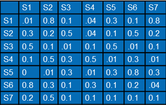
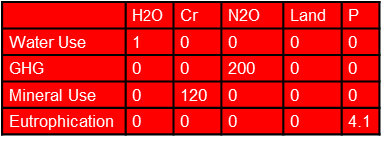

Learn about Input-Output Model Construction
A course for Dummies (like me) on Matrix Algebra and Factor Preparation
We use matrix algebra to represent the steps for creating the Environmentally-Extended EEIO models, using conventions for variable names commonly used in the IO literature and the existing USEEIO model documentation when possible.
A Matrix is simply a spreadsheet - a two dimensional table of data
- Capital letters indicate matrices and lower case letters vectors.
- “^” over a variable represents the diagonalization of a vector as a matrix.
- An exponent of “-1” represents an inverse.
- A “\('\)” (prime) represents the transposed (rows and columns switched) form of a matrix or vector.
For related matrix info see the USEEIO Model Component Matrices and the USEEIO API summary
| Item | Type | Description |
|---|---|---|
| models | metadata | A list of USEEIO models provided |
| \(A\) | component | The direct requirements matrix for a given model.  |
| \(B\) | component | The satellite matrix for a given model |
| \(C\) | component | The characterization factor matrix for a given model  |
| \(D\) | component | The direct impact matrix for a given model |
| \(F\) | component |  |
| \(L\) | component | The Leontief inverse matrix for a given model |
| \(U\) | component | The total impact matrix for a given model |
| \(V\) | component | The Make table |
| \(B_{dqi}\) | component | Data quality scores for the B matrix for a given model |
| \(D_{dqi}\) | component | Data quality scores for the D matrix for a given model |
| \(N\) | component | |
| \(U_{dqi}\) | component | Data quality scores for the U matrix for a given model |
| sectors | metadata | A list of sectors in a given model |
| flows | metadata | A list of flows in a given model |
| indicators | metadata | A list of indicators in a given model |
| demands | metadata | A list of demand vectors available for use with a given model |
USEEIO Methology
Overview of each matrix (array of numbers) and Data formats for sectors, flows and LCIA categoriesTechnology matrix (\(A\)) does not include wages (compensation), taxes, nor gross opperating surplus (profits) "Value Added" is the sum of wages, taxes and profits.
Environmental matrix (\(B\)) = Emission per dollar
Total industry (emission) / output
\(D\) and \(U\) matrices are the results.

Source: DOE Bioenergy Technologies Office (BETO) - 2019 Project Peer Review
Model Construction
We'll use green house gas emissions as an example.Supply Chain Greenhouse Gas (GHG) emission Factors for US Industries and Commodities
The national totals of the Greenhouse Gas (GHG) Emissions by industry must be transformed into a matrix of coefficients in the form of national total per industry, also referred to as the GHG satellite account, represented as \(B\) in the following equation, with a subscript of \(I\) denoting its industry form, and \(t\) denoting the USD year the same year as the IO data.
$$B_{I,t} = E_{I,s}\hat{x}^{-1}_{s,t}$$
In the above equation, \(E_I\) is a emission x industry matrix of national totals of each GHG by industy sector in year \(s\), and \(x_{s,t}\) is a vector of gross output by industry in year \(s\), given in year \(t\) dollars. The industries in the \(E\) columns match the industries in \(x\).
For \(x_s\) to be in year \(t\) USD, \(x\) must first be price adjusted in the following equation,
$$x_{i,s} = x_{i,a}*\rho_{i,a \rightarrow b}$$
where \(x_{i,a}\) is the year industry ouput for industry \(i\) in the currency year, \(s\), corresponding to the year of the national GHG totals. \(\rho\) is a price adjustment factor for industry \(i\) from currency year \(s\) to \(t\) USD. \(\rho\) for industry \(i\) is prepared using the following equation,
$$\rho_{i,a \rightarrow b} = \frac{cpi_{i,b}}{cpi_{i,a}}$$
where \(\rho\) from currency year \(a\) to \(b\) is the ratio of the industry chain price index for year \(b\) to that of year \(a\). These equations are used for each industry in the given model.
The core of an IO model is a direct requirements matrix, \(A\), representing the dollar inputs from other sectors per dollar output. Two \(A\) matrices are derived, one in commodity x commodity form, \(A_C\), and the other in industry by industry form, \(A_I\). Both are created using a combination of normalized forms of the Make and Use tables. The Make table is normalized by the commodity output vector, \(q\), and the Use table by the industry output vector, \(x\). The only difference between \(A_C\) and \(A_I\) is the order of multiplication, as shown in the following two equations.
$$A_C = U\hat{x}^{-1} * V\hat{q}^{-1}$$
$$A_C = U\hat{x}^{-1} * V\hat{q}^{-1}$$
Another name for \(V\hat{q}^{-1}\) is the Market Shares matrix. The GHG satellite table for the commodity models must be transformed by this matrix to be in emission x commodity form, using the following equation.
$$B_C = B_I * V\hat{q}^{-1}$$
The items of the \(B_c\) matrix represent direct emission factors for commodities.
The final factors must be calculated by calculating a total requirements matrix. Leontief first showed this could be done by subtracting the \(A\) matrix from an identity matrix, and taking its inverse. Supply chain emission factors can be calculated by taking the product of the \(B\) matrix of direct emission factors by the total requirements matrix, \(L\), where \(L\) is defined as
$$L_C = (I - A_C)^{-1}$$
$$L_I = (I - A_I)^{-1}$$
The following two equations show this calculation for the industry and commodity, where
$$M_{I} = B_I * L_I$$
$$M_{C} = B_C * L_C$$
This result in emission x sector matrices, \(M\), of supply chain factors, which include direct and indirect emissions per dollar produced for each sector. The factors in \(M\) have to be further transformed into purchaser price using sector-specific marginal cost data. Marginal cost data includes cost for distributions, wholesale and retail of commodity. This can be done by creating a vector or marginal cost ratios, \(\Phi_c\), both for commodities and industries for their respective models, as in the following equations.
$$\bar{M}_{C} = M_{C}* \hat{\Phi_c}$$
$$\bar{M}_{I} = M_{I}* \hat{\Phi_I}'$$
\(\Phi_c\) is a vector of commodity specific purchaser to producer prices.
$$\Phi_C = \frac{q_{pur,c}}{q_{pro,c}}$$
For use in industry models, commodity margin factors, \(\Phi_c\), need to be transformed into industry margin factors. A commodity x industry “commodity mix” matrix [@miller_blair], \(V\hat{x}^{-1}\), can be used for this purpose.
$$\Phi_I = \hat{\Phi_C} * V\hat{x}^{-1}$$
where, commodity mix matrix, a commodity x industry matrix representing the mix of commodities being produced by industries.
To identify the root sources of emissions for a given supply chain factor in \(M\), we assume $1 million USD in demand for the related sector, and calculate a scaling vector, \(s\), as
$$s = (I - A)^{-1}y$$
where \(A\) is either \(A_I\) or \(A_C\), depending on model type, \(y\) a vector of the same length as \(A\) with zeroes for all sectors except the sector of interest, where the value is set to $1 million USD. This is turn used to calculate a matrix of total emissions by root emitting sector, \(M_d\)
$$M_d = B\hat{s}$$
We also estimate the potential impacts of the margins activities associated with industries and commodities, using the same margin data along with model estimates for supply chain emissions for each sector comprising the margins. We break \(\Phi\) down into its margin transportation, \(t\), wholesale, \(w\), and retail, \(r\) sectors:
$$\Phi_C = \Phi_C,t + \Phi_C,w + \Phi_C,r$$
For each margin components, we allocate margin type across all margin sectors associated with that type, for example, for retail we need to allocate the retail margins across model retail sectors. For this We develop a margin allocation matrix, \(MA\), with rows for each of the margin components and columns for all model margin sectors. We allocate across sectors of a given margin type based on relative commodity output of the model sectors for that margin type. Note this procedure does not result in commodity or industry-specific margins types. We assemble the sector-specific margin coefficients into a commmodity by coefficient matrix, \(P\). We then multiply the margin coefficients matrix by the margin allocation matrix
$$P_a = P * MA$$
The result \(P_a\) represents $ of margin input per $ producer price for each model sector by margin sector type. We transform the result, \(P_a\), into the shape of the \(A\) matrix, to easily match up with the emissions factors, and name the reshaped form \(A_p\).
We derive emission factors for the margins with a multiplication of the original emission factor matrices, \(M\) and \(U\), by \(Pa,x,y\)
$$M_p = M * A_p$$
$$U_p = U * A_p$$
Finally, \(M_p\) and \(U_p\) are adjusted to be in purchaser prices like what is done with \(M\) and \(U\) above.
$$\bar{M}_{p} = M_{p} * \hat{\Phi}$$
$$\bar{U}_{p} = U_{p} * \hat{\Phi}$$
where \(\hat{\Phi}\) is for industries or commodities depending on the model.
Data quality scores for emission factors
Data quality scores of 1-5 are assigned based on the US EPA LCA Data Quality system to values in \(B\) for each of five indicators. These be represented in a matrix of the form of \(B\) called \(B_{dqi,i}\) created for each indicator \(i\). To scale these scores to put them to create scores for the supply chain emission factors in , this is multiplied by \(L\).
$$M_{dqi,i} = B_{dqi,i} * L$$
where \(B\) and \(L\) may be either both for industry, \(B_I\) and \(L_I\) or commodity, \(B_C\) or \(B_I\) models.
Model validation
The validation of the supply chain factors is performed for each model from which the factors were derived. The validation test checks that the model supply chain GHG factors can be scaled back to total GHG industry emissions.
Mathematically, this validation test is based on the input-output identity that \(x=Ly\), where \(y\) if the total final demand for commodities and industries. Therefore multiplying B by both sides, to scale output using the direct emission factors, should result in equality,
$$B*x = B*L*y$$
This can be simplied in the form of the following equation.
$$Ei = (M*y)i + E_fi$$
where \(i\) is a column vector of 1s that acts as a summation vector. \(E_f\) is a matrix of emissions associated with the final user, and final user sectors are not part of \(M\). This can be understood such that the sum of the supply chain GHG factors scaled for total final demand is the same as the sum of national GHG totals for each GHG.
The issue with the model \(M\), derived from the total requirements matrix, is that it includes foreign input requirements, and that final demand also includes imports. To use the model to estimate US-produced GHGs, then \(M\) has to be created with domestic requirements only. This requires a recreation of an \(A\) matrix with only domestic requriements. To do this, we modify the original Use table to remove foreign requirements using the Import matrix, \(I_m\).
$$U_d = U - I_m$$
and then we subtract the final demand provided in the import matrix, \(Y'\), from the final demand in the original Use table, to get domestic final demand, \(Y_d\).
$$Y_d = Y - Y_d$$
Then the \(A\) matrix with just domestic direct requirements, \(A_d\), can be created using a similar derviation used for \(A\) above. Note that normalized Make table transactions are not the same. The follow equation is demonstrated below for the commodity form of the model.
$$A_{d,C} = U_d\hat{x}^{-1} * V\hat{q}^{-1}$$
We can follow from the steps to create \(M\) from \(A\) and apply them to create \(M_d\) using the \(A_d\). This refines the data validation check to compare national GHG totals only to the sum of the supply chain factors based on domestic requirements scaled by the domestic final demand, as in the following equation:
$$Ei = (M_d * y_d)i + E_fi$$
The difference between the left and right terms of the equations is evaluated per GHG and explained as a model error.
Regional Estimate of Commodity Output
For the IO chart, rather than use per $, we provide a regional estimate of commodity output \(q_c\). We show direct dollar amounts and direct impacts. This obviates the complexities of the indirect impact calculations in the IO chart.
- Upstream: We show total dollar amount of direct inputs for all combined commodities.
$$(q_c)*A$$
- Commodities: Do not select only the top 20 by default. Subselect indicators were direct impacts are relevant...this will exclude energy use and mineral use for instance. All impacts can be estimated through scaling of the \(D\) matrix.
$$(q_c)*D$$
- Downstream: Will show total dollar amount of direct uses for all combined commodities.
$$A*(q_c)$$
To estimate commodity output for the total, we first estimate industry output, then apply the market shares transformation. The new API version (v1.2) and model v2.0 is used to get the needed data.
We use industry payroll from the Bureau of Labor Statistics (BLS) as a proxy measure of industry output in the following manner:
$$x_{i,c} = \frac{w_{i,c}}{w_{i,t}} * x_{i,t}$$
where \(x_{i,c}\) is industry output for industry i for the community c, \(w_{i,c}\) is a community payroll for industry i, \(w_{i,t}\) is a payroll for industry i in the IO model region (US for USEEIOv2.0), and \(x\) is the model's provided industry output for industry i. This is a single industry formula but the calculation would be best implemented in a vector form using matrix multiplication to do all at once.
In order to get the index of the payroll vectors to match the IO model industries, we relate the NAICS based payroll data to model sectors using the built-in API crosswalk where we assume the payroll sectors match those in the NAICS column and we aggregate it to model industries using the provided model industries column.
Once we have a vector \(x_{c}\) of industry output for the community indexed by the model industries, we use a market shares transformation to derive commodity output for the community, \(q_{c}\).
$$q_c = x_c * V\hat{q}^{-1}$$
where \(V\) is the Make table and \(q\) is the commodity output vector. More details on \(V_n\) found in the useeior model format spec.